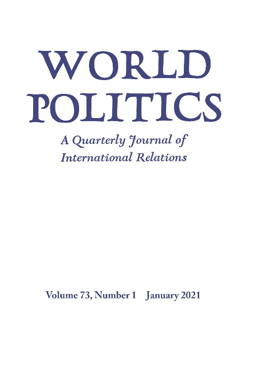

收录于合集 #新刊速递 123个


期刊简介

World Politics（《世界政治》）创刊于1948年，是享誉国际的政治科学季刊，内容涵盖国际关系和政治科学的各个领域，其主编是Deborah J. Yashar。该期刊欢迎的投稿类型有具有理论和实证贡献的研究类文章，以及有关国际关系和比较政治问题的评论性文章。2019年该期刊的影响因子为2.500，在95种国际关系类期刊中位列第15名。
本期编委
【编译】 邵 良 阮辰阳 戴 赟 吕紫烟 徐一凡
【审校】 卫艺璇 李博轩 姚寰宇
【排版】 张湘苹

本期目录
1. 种族重新分类与政治认同的形成
Racial Reclassification and Political Identity Formation
2. 激进组织中的实践意识形态
Practical Ideology in Militant Organizations
3. 宗教、种族和叛乱动员的结构：印度的实证
The Structure of Religion, Ethnicity, and Insurgent Mobilization Evidence from India
4. 妥协的力量：国际谈判中的提案权、党派关系和公共支持
The Power of Compromise: Proposal Power, Partisanship, and Public Support in International Bargaining
5. 重新定义国际安全中的声誉与信誉问题：近期学界的贡献与局限
Redefining the Debate Over Reputation and Credibility in International Security: Promises and Limits of New Scholarship
01
种族重新分类与政治认同的形成
【题目】 Racial Reclassification and Political Identity Formation
【作者】 David De Micheli, 犹他大学政治学和民族研究助理教授。
【摘要】 本文采用巴西的一个种族重新分类的现象来揭示身份政治化的过程。经典文献告诉我们，混血、流动的种族边界，以及对黑人的污名化导致巴西人改变他们的种族认同，将自身所属种族重新归类为白人。但近年来，巴西人表现出一种新倾向，将自身所属种族重新归类为黑人。作者认为，这一骤变是国家主导的低阶层教育扩张的意外结果。教育扩张增加了新流动公民对信息、社交网络和劳动力市场的接触，导致许多人形成种族化的政治认同并且选择做黑人。作者通过深入访谈数据、对全国调查和纵向人口普查数据的系统分析以及一手调查实验，发展并检验了这一论点。本文对身份政治化作了一个新的描述，强调了社会结构和公民制度在这一过程中的相互作用。
This article leverages a phenomenon of racial reclassification in Brazil to shed new light on the processes of identity politicization. Conventional wisdom tells us that race mixture, fluid racial boundaries, and stigmatized blackness lead Brazilians to change their racial identifications—to reclassify—toward whiteness. But in recent years, Brazilians have demonstrated a newfound tendency to reclassify toward blackness. The author argues that this sudden reversal is the unintended consequence of state-led educational expansion for the lower classes. Educational expansion has increased the exposure of newly mobile citizens to information, social networks, and the labor market, leading many to develop racialized political identities and choose blackness. The author develops and tests this argument by drawing on in-depth interview data, systematic analyses of national survey and longitudinal census data, and original survey experiments. This article contributes a novel account of identity politicization and emphasizes the interaction between social structures and citizenship institutions in these processes.
【编译】 邵良
【审校】 卫艺璇
02
激进组织中的实践意识形态
【题目】 Practical Ideology in Militant Organizations
【作者】 Sarah E. Parkinson（约翰霍普金斯大学助理教授）
【摘要】 意识形态塑造了武装分子的招募、组织与冲突行为。现有研究假定存在信条一致性、拥护者自上而下的社会化以及正统意识形态与政治行动之间的清晰联系。然而人们早就认识到，意识形态承诺不会原封不动地从首要分歧或精英叙事中创造出来；这些承诺是不均衡的、偶然的、充满张力的，同时经常是矛盾的。如果意识形态没有被彻底研究、内化或深信，那么它在激进组织中起到了怎样的作用？学界如何解释具有强烈团队归属感的武装分子在并非一直是意识形态信仰者或理论家的情况下，仍然产生了集体承诺、亲密关系与行为结果？作者认为，在武装分子社会化过程中以日常实践的方式扮演重要角色的是实践意识形态，即一系列反映关系世界观的日常准则、思想与社会性启发式教育，而非特定公布的政治信条、立场、平台或规划。从在黎巴嫩的巴勒斯坦人进行的实地考察得到的民族志证据证明了武装分子及其附属机构是如何通过情感、知识与道德诉求去拉近意识形态上的相近性与距离的。这种方法重申了在没有公开援引正式信条的情况下，话语与叙事在形成武装分子社会化的非正式机制方面的作用。
Ideology shapes militant recruitment, organization, and conflict behavior. Existing research assumes doctrinal consistency, top-down socialization of adherents, and clear links between formal ideology and political action. But it has long been recognized that ideological commitments do not flow unaltered from overarching cleavages or elite narratives; they are uneven, contingent, fraught with tension, and often ambivalent. What work does ideology do in militant groups if it is not deeply studied, internalized, or sincerely believed? How can scholars explain collective commitment, affinity, and behavioral outcomes among militants who clearly associate themselves with a group, but who may not consistently (or ever) be true believers or committed ideologues? I argue that practical ideologies—sets of quotidian principles, ideas, and social heuristics that reflect relational worldviews rather than specific published political doctrines, positions, platforms, or plans—play a key role in militant socialization through everyday practices. Ethnographic evidence gained from fieldwork among Palestinians in Lebanon demonstrates how militants and affiliates render ideas about ideological closeness and distance accessible through emotional, intellectual, and moral appeals. This approach reaffirms the role of discourse and narrative in creating informal mechanisms of militant socialization without expressly invoking formal doctrine.
【编译】 阮辰阳
【审校】 李博轩
03
宗教、种族和叛乱动员的结构：印度的实证
【题目】 The Structure of Religion, Ethnicity, and Insurgent Mobilization
Evidence from India
【作者】 Anoop Sarbahi，明尼苏达大学双城分校政治科学系助理教授。
【摘要】 本文对族群的社会结构进行探讨，并以此解释族群内部和族群之间叛乱动员的差异。基于网络的社会结构方法，本文认为，策动叛乱受到族群结构连通性的限制，这是衡量亚族裔群体社区、村庄、氏族和部落内部和彼此之间社会连通程度的一个尺度。在农业社会中，结构上的连通性可以追溯到宗教。根据印度米佐邦叛乱中招募叛军的独特资料，以及与基督教在米佐邦之间传播有关变化的微观差异，作者论证了由威尔士长老会高度集中下掌握的教会和机构网络所导致的结构连通性增强显著地促进了叛乱分子的招募。对米佐叛乱分子的半结构化访谈和来自邻近的梅泰和那加族叛乱的民族志证据进一步支持了这一论点和随意性的机制。
This article problematizes the social structure of ethnic groups to account for variation in insurgent mobilization within and across ethnic groups. Relying on network-based approaches to social structure, it argues that insurgent mobilization is constrained by the structural connectivity of the ethnic group, a measure of the extent to which subethnic communities—neighborhoods, villages, clans, and tribes—are socially connected internally and with each other. In agrarian societies, structural connectivity is traced to religion. On the basis of unique data on rebel recruitment from the Mizo insurgency in India and microlevel variations in changes associated with the spread of Christianity among Mizos, the author demonstrates that enhanced structural connectivity resulting from a network of highly centralized churches and institutions under the Welsh Presbyterian Mission significantly bolstered insurgent recruitment. Semistructured interviews of Mizo insurgents and ethnographic evidence from the neighboring Meitei and Naga ethnic insurgencies further support the argument and the casual mechanism.
【编译】 戴赟
【审校】 李博轩
04
妥协的力量：国际谈判中的提案权、党派关系和公共支持
【题目】 The Power of Compromise: Proposal Power, Partisanship, and Public Support in International Bargaining
【作者】 瑞安·布鲁特格(Ryan Brutger)，加州大学伯克利分校政治学的助理教授，主要研究国际政治经济学、国际法、国际安全和政治心理学，国际谈判与合作的国内政治。
【摘要】 在公共外交日益增多的时代，传统观点认为，领导人做出妥协会损害自己的声誉，失去选民的尊重，同时也破坏了国际和平与合作的前景。本文对这一假设提出了挑战，并考察了领导者如何在防止自己在国内的认可度和声誉被削弱的基础上，达成协商妥协。通过借鉴个人核心价值观、心理过程和党派关系等相关理论，作者认为领导人是通过行使提议权和发起妥协来减少或消除国内公共约束的。针对公众认可度和对声誉的看法如何影响领导者的安全和经济策略这一问题，作者进行了调查试验。作者发现，领导人对妥协的态度受听众和领导人意识形态的制约，信奉自由主义的听众更加支持妥协。以美国为例，这导致共和党总统在谈判妥协方面有更大余地。文章指出行使提案权的领导人享有很大灵活性，可以在国际谈判中协商妥协解决。
In an era of increasingly public diplomacy, conventional wisdom assumes that leaders who compromise damage their reputations and lose the respect of their constituents, which undermines the prospects for international peace and cooperation. This article challenges this assumption and tests how leaders can negotiate compromises and avoid paying domestic approval and reputation costs. Drawing on theories of individuals’ core values, psychological processes, and partisanship, the author argues that leaders reduce or eliminate domestic public constraints by exercising proposal power and initiating compromises. Employing survey experiments to test how public approval and perceptions of reputation respond to leaders’ strategies across security and economic issues, the author finds attitudes toward compromise are conditioned by the ideology of the audience and leader, with audiences of liberals being more supportive of compromise. In the US case, this results in Republican presidents having greater leeway to negotiate compromises. The article’s contributions suggest that leaders who exercise proposal power have significant flexibility to negotiate compromise settlements in international bargaining.
【编译】 吕紫烟
【审校】 姚寰宇
05
重新定义国际安全中的声誉与信誉问题：近期学界的贡献与局限
【题目】 Redefining the Debate Over Reputation and Credibility in International Security: Promises and Limits of New Scholarship
【作者】 罗伯特·杰维斯（Robert Jervis），哥伦比亚大学政治学系Adlai E. Stevenson讲座教授、美国科学进步协会会员、美国艺术与科学院院士，2000—2001年任美国政治学会主席。他的研究领域涉及政治心理学、国际关系理论、决策分析、核战略和美国外交政策等，是国际政治心理学的集大成者。他的专著《国际政治中的知觉与错误知觉》和《系统效应：政治与社会生活中的复杂性》是政治心理学和社会科学的经典名著。
Keren Yarhi-Milo，哥伦比亚大学政治学系Arnold A. Saltzman讲座教授，也是同校Arnold A. Saltzman战争与和平研究所主任。她的研究领域主要包括：国际安全，外交政策制定，心理学，情报学，与美国的中东政策等。
Don Casler，哥伦比亚大学政治学系博士候选人。他的研究涉及国际安全和国际政治经济学，包括外交政策制定、政治心理学和公众舆论等。
【摘要】 近期学界的一股热潮为国际政治中的声誉和信誉研究注入了新的活力。本文欢迎这一趋势，并同时提出一个对这些学术创新的评价框架，一系列相关评论，以及一些对未来研究的建议。本文详细说明了这些在审核中的著作如何代表了对世界政治中声誉的重要性达成共识的重要一步，并阐明了在何种条件下与声誉相关的推论会最为显著。本文同时认为，尽管最近的研究对这一领域做出了重要贡献，但对声誉感知方的心理却没有足够论及。这些研究为了注重情势因素而忽略了某种秉性变量，为了着重研究声誉而短视地几乎排除了其他因素。尽管贡献颇多，但这些文献并没有充分解释行为体是如何对声誉做出推断的。这些理论空白值得学界的注意，而心理学或许能帮助填补这些空白。
A wave of recent scholarship has breathed new life into the study of reputation and credibility in international politics. In this review article, the authors welcome this development while offering a framework for evaluating collective progress, a series of related critiques, and a set of suggestions for future research. The article details how the books under review represent an important step toward consensus on the importance of reputation in world politics, elucidating scope conditions for when reputational inferences are likely to be most salient. The authors argue that despite the significant accomplishments of recent studies, the scholarly record remains thin on the psychology of the perceiver and is instead focused on situational factors at the expense of dispositional variables and is rather myopically oriented toward reputation for resolve to the exclusion of other important types. Despite its contributions, the new literature still falls short of a full explanation for how actors draw inferences about reputation. These remaining theoretical challenges demand scholarly attention and suggest a role for psychology in filling some of the gaps.
【编译】 徐一凡
【审校】 姚寰宇

国政学人
支持学术公益与知识传播
微信扫一扫赞赏作者 __赞赏
已喜欢，对作者说句悄悄话
取消 __
发送给作者
发送
最多40字，当前共字
上一页 1/3 下一页
长按二维码向我转账
支持学术公益与知识传播
受苹果公司新规定影响，微信 iOS 版的赞赏功能被关闭，可通过二维码转账支持公众号。